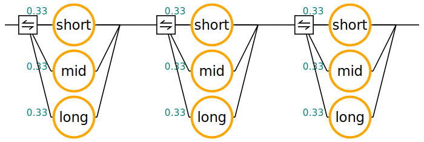

| Copyright | Predictable Network Solutions Ltd. 2003-2024 |
|---|---|
| License | BSD-3-Clause |
| Safe Haskell | None |
| Language | Haskell2010 |
DeltaQ
Description
This module brings data types and functions for ∆Q System Development into scope.
Specifically,
type classes in DeltaQ.Class
Outcomefor outcomes and their sequential and parallel compositionProbabilisticOutcomefor probabilistic composition of outcomesDeltaQfor probability distribution of completion times
type class instance in DeltaQ.PiecewisePolynomial
DQRational. This type represents a mixed discrete / continuous probability distribution where the continuous part is represented in terms of piecewise polynomials.
- common methods for analysis and construction in DeltaQ.Methods
plotting utilities in DeltaQ.Plot
plotCDFWithQuantilesfor plotting an instance ofDeltaQwith quantiles highlighted.
type class instance in DeltaQ.Expr
O
- rendering of outcome expressions in DeltaQ.Diagram
Synopsis
- module DeltaQ.Class
- module DeltaQ.Expr
- module DeltaQ.Diagram
- module DeltaQ.Methods
- module DeltaQ.Plot
- module DeltaQ.PiecewisePolynomial
Example
In order to demonstrate the use of this module, we explore a real-world example which occurred during the design of the Cardano blockchain.
Problem: We want to design a computer network through which we can send a message from any computer A to any other computer Z.
However, instead of connecting each pair of computers through a direct
TCP/IP link, we want to save on connection cables
and only connect each computer to a fixed number of other computers;
these computers are called neighbors and
this number is called the node degree d of our network.
A message from computer A to computer Z will
first be sent to one of the d neighbors of A,
then be relayed to one of the neighbor's neighbors,
and so on until it reaches Z.
hrough the network.
How much time does it take to send the message
from computer A to computer Z through the network?
How should we choose the parameter d in order to improve this time?
How can we refine the network design in other ways?
This questions can be answered by using this module.
import DeltaQ
We start with an estimate based on measured transfer times.
Depending on geographic distance and location,
a direct TCP/IP connection may delive a message within
different amounts of time.
We distinguish between short, medium and long distance.
For sending a block of 64k bytes of data,
representative times are (in seconds)
short, medium, long :: DQ short = wait 0.024 -- seconds medium = wait 0.143 -- seconds long = wait 0.531 -- seconds
(These are delay times for the data to arrive, not roundtrip times for the sending computer to receive an acknowledgment.)
If we assume that a direct TCP/IP connection between computers has
an equal probability of being short, medium, or long,
the probability distribution of delay times for a single hop is
hop :: DQ hop = choices [(1/3, short), (1/3, medium), (1/3, long)]
The distribution of delay times for a sequence of hops is
hops :: Int -> DQ hops 1 = hop hops n = hop .>>. hops (n-1)
For example, the probability of five hops to succeed within 2 seconds is
> fromRational (successWithin (hops 5) 2) :: Double 0.9547325102880658
Besides computing delay times numerically with the type DQ,
we can also represent the underlying model symbolically
using the type O.
For example, here is a diagram that represents a sequence of three hops:
hop' :: O hop' = choices [(1/3, var "short"), (1/3, var "mid"), (1/3, var "long")] hops' :: O hops' = hop' .>>. hop' .>>. hop' renderedHops :: Diagram SVG renderedHops = renderOutcomeDiagram hops'

Modules
module DeltaQ.Class
module DeltaQ.Expr
module DeltaQ.Diagram
module DeltaQ.Methods
module DeltaQ.Plot
module DeltaQ.PiecewisePolynomial